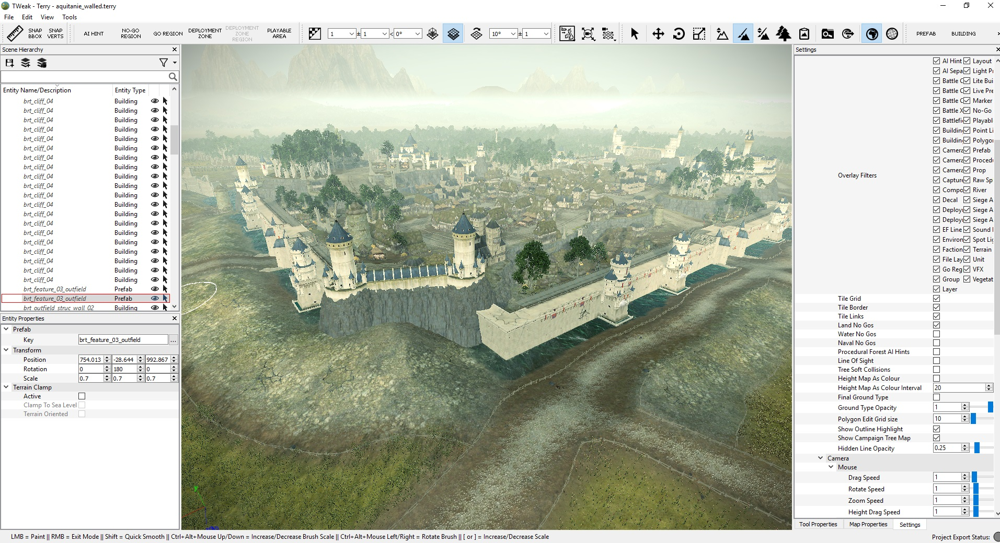
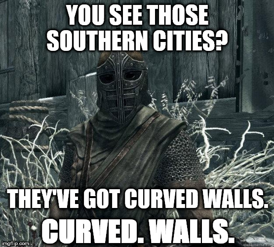
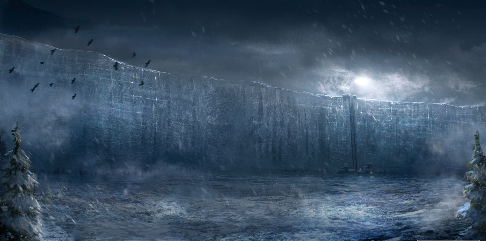
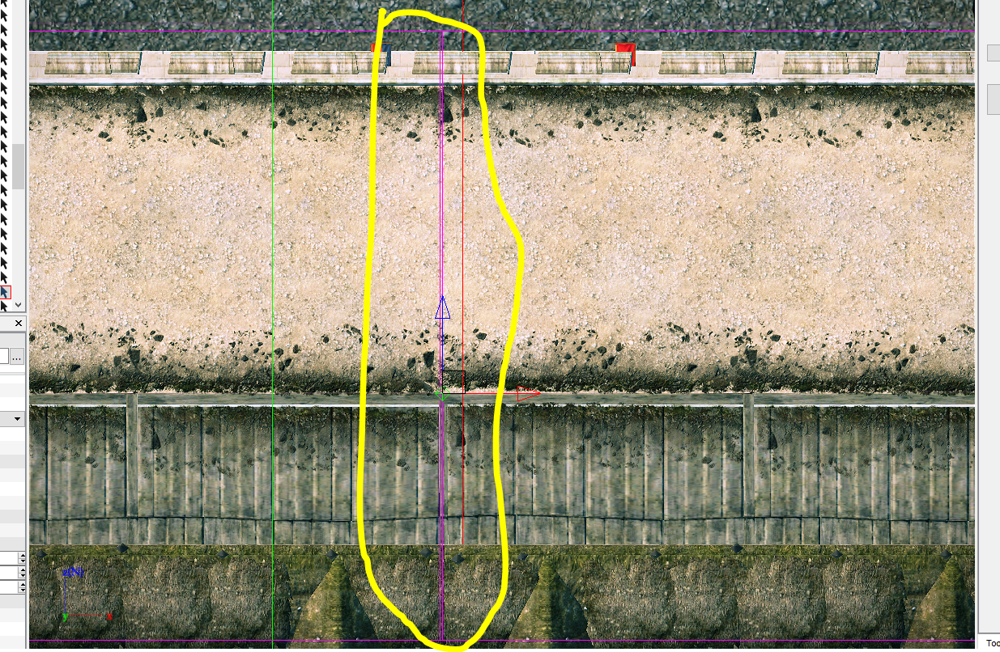
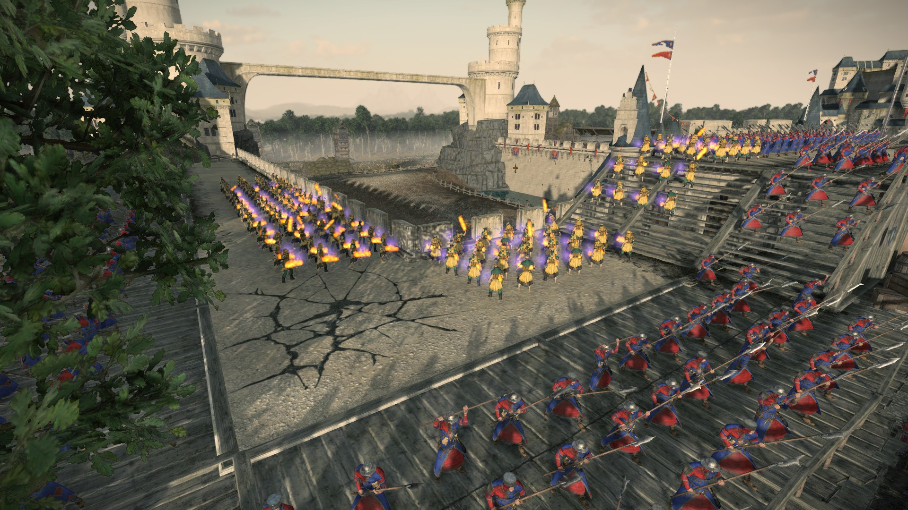
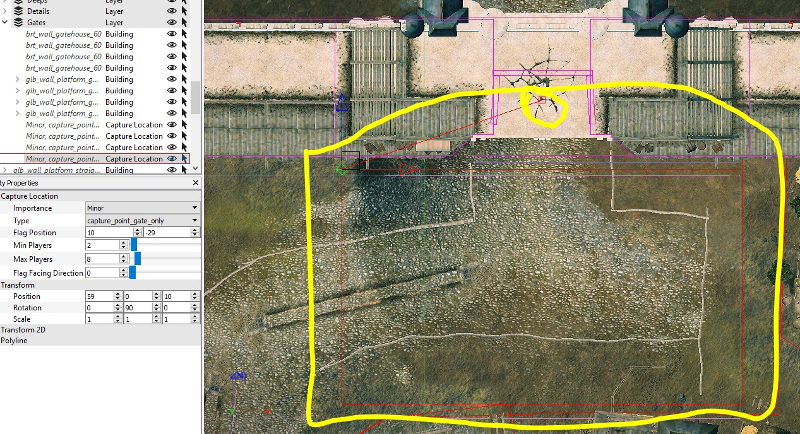
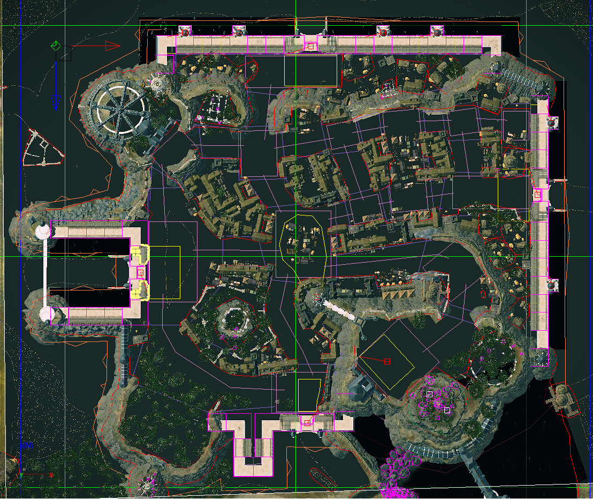

Siege Battle Maps
Siege maps are.... complex beasts. They're the most detailed, time-consuming, and memorable battlemaps you can play in a Total War game, yet they're so complex people often fails to get their fully potential realised. So today, we're going to learn how to make a proper siege map. With proper walls, AI support,... So if the AI doesn't work as you want, you can no longer say it's just the AI's fault!
Before we begin, a little warning: this tutorial is on the advanced side, and it's quite technical. I'll try to explain all the stuff hard to understand, but this assumes you have at least learnt how to do basic things in Terry, like painting the map, placing buildings, etc... And that you have some basic knowledge on how to edit DB Tables with RPFM. If not, go watch another tutorial that cover the basics, then come back when you can move around Terry.

Requirements
First, we need a few tools and resources to make a proper siege battle map:
Assembly Kit: You can install it from Steam. We'll use Terry, one of the included tools in the Assembly Kit to make the map.RPFM: You can get it from here. We need it for some map post-processing, due to the fact that Terry doesn't support making Siege Maps as-is.GCCM Custom Assets: You can get it from here. It enables certain disabled-by-default buildings in Terry (including Walls). Just remember to add the workshop version to your map's requirements if you use it while building your map. Otherwise people can have all kind of bugs while playing it.Siege Map DB Stuff: You can get it from here. It's an already pre-configured PackFile with some stuff we'll use in the tutorial.Aquitaine, Home of the Lace Tower: You can get it from here. These are the source files of the Aquitaine's Custom Map from Warhammer 2, to serve as an example of a fully working SiegeAI, because otherwise people seem unable to make the SiegeAI work.....
Once we have these tools and resources, we can start talking about making maps! Next, let's get clear the technical requirements of a Siege Battle Map. First, for it to just work we need:
- Two Deployment Zones. One for the attacker, one for the defender.
- One Additive Deployment Region inside of each deployment zone.
- Walls. Yeah, walls. With gates, towers, and even more walls.
That's enough to make it kinda work in a player vs player game, but it'll be barely playable. For a proper player vs AI.... there's quite a lot more to do:
- Deployment AI Hints, only in the attacker's deployment zone.
- Attacker/Defender Reinforcement Lines. Optional, only needed if you plan to make the map work in campaign.
- Battlefield Zones, to make the walls garrisonable.
- Capture Points, to be able to capture places.
- SiegeAI Layout, to make the AI work in the map.
- Fort Perimeter AI Hint, to make the SiegeAI Layout not crash the game.
- Force the map to load as a Siege Battle Map, not a Land Battle Map. Otherwise, part of the AI will be broken.
And if you want to do like me, and go beyond that, there's still the possibility of adding custom buildings, custom towers, particular gimmicks..... but that's outside the scope of this tutorial, so we're going to keep it simple, and just focus on those requirements.
And now we're going to go through the five phases of siege mapmaking.
Phase 1: the funny part.
To begin, create a new map in Terry, name it whatever you want, and.... start building it. Place your buildings, change your terrain... just make the map you want. But you need to keep some things in mind:
- First, MAKE STREETS WIDE ENOUGH. The number one problem of siege maps is street width. People tend to make them too narrow, then they're too narrow to be able to deploy units properly, and the map is a nightmare to fight on. This is the biggest thing you have to take into account: don't make narrow streets. Make them at least big enough you can fit one and a half ultra-sized infantry units, on wide formation. Less than that will give you big problems in playability.
- Second, USE WALL BUILDINGS, NOT WALL PROPS. A building have logic and collision. A prop doesn't have logic nor collision. When placing your walls, use always the walls from the
Buildingssection, never from thePropssection. - Third, keep your city/castle/town layout simple. The more complex it gets (very long and zigzagging streets, narrow streets,... ) the harder it gets for the AI to both, defend it and attack it effectively. Also, the harder it gets for your CPU to get the pathfinding for the units working, which means more CPU load.
- Fourth, don't make curved walls! As we're going to see in a later point, walls need a special, very precise set-up to work. So don't make your map planning on having working curved walls. You can have fake unusable curved walls, but not real ones.

With those points in mind, create your map. Once you have put down your buildings, painted your map, and had fun, it's time for the serious business.
Phase 2: Trust me, I'm an Engineer.
Now we are going to make the map playable, which means finishing the first of the two requirements list. First, the deployment zones.
Deployment Zones control where a specific alliance or player can deploy his units at the start of the battle. It's simple: make one around the place you want the attacker to deploy, and the same for the defender. Each defender zone you create will automatically have an additive region inside it. You can create different regions within a deployment zone:
Additive: The units of his alliance can deploy inside it.Subtractive: The units of his alliance cannot inside it.Guerrilla Exclusion Additive: The units of the enemy alliance cannot deploy inside it when using vanguard deployment.Guerrilla Exclusion Subtractive: The units of the enemy alliance can deploy inside it when using vanguard deployment.
For a simple land battle map, you can just use the default additive region and leave the game generate the vanguard deployment zones by itself. But in this case, I personally recommend you make the vanguard zones yourself, specially if your settlement's borders have weirdly-shaped deployment zones. To do that you have to follow some simple steps:
- Starting with your additive deployment regions already done, draw a
Guerrilla Exclusion Additivearound the entire map. That'll remove the auto-generated vanguard deployment zones. - Then, draw a
Guerrilla Exclusion Subtractivearound the enemy's deployment zone. The enemy's vanguard-deploying units will only be able to deploy here, so make sure their originalAdditiveregion is contained inside this one. Otherwise, there may be parts of their base deployment region where vanguard units cannot be deployed!
You can select the alliance in the entity options of the Deployment Zone. Alliance 0 is the attacker, 1 is the defender, and 2 and 3 are for FFA maps, so don't use them here.
Also, you need to place some Deployment AI Hints to tell the AI for good places to deploy inside their normal/vanguard deployment zone. Just draw a few of them in single lines (no more that two vertex, or the AI will ignore them).
Next, the walls. A good siege needs a good wall. Everybody knows that. Everybody. Walls are the first basic obstacle the attacker has to pass. So we have to make one.

Walls are special buildings with special logic, and such they need to be placed in a special way. For this task I recommend you enabling Grid Snapping and Show Building Collision Outlines settings in Terry. Grid Snapping will make sure your buildings are placed at fixed intervals when placing or moving them (not 0.324->0.325->0.326, but 0->1->2). Show Building Collision Outlines will make the collision line of your walls (that pink border you may see around each piece of wall) appear, which is very helpful to find moved/misaligned walls.
Walls need to placed one after another, with perfect precision. And I mean PERFECT PRECISION. A 0.001 of difference between wall pieces will break their connection, causing problems with units trying to scale/garrison them. Walls usually are made with a fixed size (for example, they're 20x20 in Warhammer), so if you put a wall on (x:50, y:0, z:10) the next one has to be in (x:70, y:0, z:10) to work. Perfectly connected, as all things should be. And knowing that, just place them forming you great wall. Same happens for even more special walls, like Corners, Gates and Towers. Just align them properly, and you're done.

With that, you should be able to load your wonderful map as a land battle, start the battle and... it'll barely work. The gates will be unusable. The towers will not shoot. The walls will not be garrisonable. The AI will behave erratically. Then you cry. Then you realize you still have work to do.
Phase 3: WHY U NOT WORK????
Now it's time for the second hardest part. To make your map work. Take a coffee, or a cup of tea the british ones, and relax. You'll need it.
First, we're going to make the walls work. As I said before, walls are special buildings. They have logic, but that logic doesn't work as is. That logic only works when the building it's put inside a Battlefield Zone. A Battlefield Zone is what makes your units able to get in formation atop the walls. But the thing is.... Terry cannot make Battlefield Zones. It's one of the many things disabled in the Terry modders have. But where there is a problem, there is a... workaround. We cannot create new BattleField Zones, but we can copy/paste the ones that we already have. Just get one from the prefab_repo map from the assets, and copy/paste/tweak it to fit around your wall section (one each big section, not one each wall piece!). We'll leave out how to create new ones from scratch for now. Otherwise many of you would run away at this point...
Once you get the Battlefield Zones you need for your walls, you can load your map in-game and lo and behold! Your units can now get in formation atop the walls!

Next, let's fix the gates and towers, shall we? Gates and Towers are another special type of buildings. They have a certain behaviour, but only for the player it controls them. So, to make them controllable, we need to make a Capture Zone for each tower and gate. And with make I mean Copy/Paste/Tweak from the prefab_repo map. Same problem as with the Battlefield Zones: we cannot do them in Terry. Once you got your Capture Zone where you want it, give it a name (select it in the entity list and click F2 to rename it), then select the building you want it to control and, under Capture Location, select your Capture Zone. Repeat with all your gates and towers. Also, you want to let at least one capture zone to act as Victory point of your siege map. Put it where you want.
Once you got them all, let's tweak the Capture Zones. The capture zones can be of two types:
Minor: Normal capture zones. Don't appear on the minimap.Mayor: Capture zones that show up in the minimap and in the top of the screen, as unique capture points.

And there are multiple capture points, but for the sake of simplicity, gates should be Minor/Gate only, towers should be Minor/Tower only and VP should be Major/Victory Plaza.
Now we can export it again, and test it. Many things will still be broken, but you can use this test to ensure your Capture Zones are setted up correctly. The VP should have an special icon and appear on the map, and you should be able to hold the gate and towers! But.... the towers will not shoot. Time to fix the last broken thing in the walls, the towers.
Towers are.... well, you know the drill. Copy them from the prefab_repo map, then put them into your map, replacing the dummy towers, and remember to assign them their Capture Zones. You'll see some white arrows coming out of the tower. Those are the Projectile Emitters. Same thing as with the rest, we cannot create then, and these require tinkering with the layer files of the map to set them up. A complex mess. So just copy the towers from the prefab_repo map, then move the emitters around until you have them where you want. That's all.
Export your map, load it in-game, and the entire walls, with gates and towers should be working (except siege towers, those will still be broken). That ends the second hardest part. Now it comes the first one: SiegeAI.
Phase 4: Every time I export, the gods toss the coin in the air.
Siege and Unfortified Battle Maps use a system called SiegeAI to get the AI to understand the layout of a map. The system is basically a layout of nodes and links. Like an overlay over the map that the AI can understand. Here is where Kazad usually stops working due to complexity overload. And here is where a lot of people start getting angry because a bad set-up of this system can and will crash your game. And again, we have no direct access to it, like most of this stuff. So we have to copy the pre-made pieces of the system, then paste them into the map and tweak it. Yay!!!!! (irony mode off).

First, let's explain the parts of the SiegeAI System. The system consist of Nodes (for the AI to recognize important places to defend) and Edges (links between those places).
Nodes are usually composed by the node itself (pink) and a linked boundary (dark pink). The node is what the units will recognize and use to move, the boundary is used to define the logical borders of the node. The different types of nodes are:
Area Node: Where the AI will deploy his units. Also, these areas are going to be actively defended by them. Use them for gates, victory points, capture points, and whatever place you want the AI to keep and eye upon. Also, the more of these nodes, the less the AI will blob up in big nodes.Intersection Node: for intersections you don't want the AI to actively protect.Wall Area Node: No idea. I suspect that it's to make the AI see special places as walls, but... Haven't been able to get it working.Entry Node: For open entrances on unfortified maps.Firing Node: No idea. Only on Warhammer 2. We tried to use it multiple times and we only got crashes with it.
Those are the nodes, now the edges:
Street Edge: What you're going to use to connect intersections/areas. It has one edge (pink) and two boundaries (dark pink), one on each side.Area Connection Edge: Don't really know his use, but it looks and works similar to the street edge.Wall Edge: Just a line. Draw it from one end of the wall section (and by section I mean the entire wall line, not just each little wall piece), around the middle of the wall. This will make the AI see the wall and use it for both, attacking and defending.Palisade Edge: To make the AI see palisades it can garrison. I guess. Never got this working though, as there are no palisades in Warhammer.
Also, there are two AI Hints you'll need to make these maps work:
Fort Link: This one is used to 'join' your Wall Edges so, in the end, your Wall Edges + Fort Links form a closed perimeter. We don't have access to it, but with some dark magic we can use it.Fort Perimeter: This makes the entire SiegeAI system work, and your map will hard-crash if you don't have it. It's also the culprit of most of the AI problems in a Siege. This is another thing we don't have access too, and this one is tricky, because if Terry sees it, it'll turn it into a useless defensive area when exporting.
Now, what do we do with this stuff?. Simple:
- Place every non-walkable zone of the map under a No-Go Region. This is useful to reduce the amount of narrow places your units can get stuck, and to... smooth the walkable terrain for the units pathfinding.
- Place an Area/Intersection Node in all intersections of your Siege Battle Map. As an advice, do plenty of Area Nodes, and leave Intersection Nodes for small intersections. That'll give the AI plenty of space to deploy/defend, instead of concentrating all his forces in one place.
- Use Street Edges to connect all your Area/Intersection Nodes. To connect an Edge with a Node, just make sure the Edge (pink) intersects with the Node (pink) and both boundaries of the Edge (dark pink) intersects with the Node's boundary (dark pink). Like cables, blue to blue, red to red. For no-exit streets, you can leave the the end of the Edge corresponding to the closed end of the street open.
- Draw a Wall Edge from the beginning of the first Wall, to the end of the Last Wall. Usually, there should be one Wall Edge per wall section, but for some reason in Warhammer 1/2 only the first Wall Edge is used by the AI. The rest are ignored.
- Draw a Fort Link closing both ends of the Wall Edge. You just need to make their ends intersect.
- And now the tricky one: draw a
Defensive Hill AI Hint(yes, you read right) around your entire City/Castle. This will be ourFort Perimeter, so make sure you set it up right. Not too far from the walls, not too close to the walls. Around 20 units away from the wall is ok.
Now export your map BUT DON'T START PLAYING YET. If you try to play it, you'll immediately see two problems:
- Your map will be qualified as a
Land Battle Mapin Custom Battle. - Your map will crash when trying to play it.
Thankfully, those are the last two problems we need to fix.
Phase 5: And lo and behold, my grace in all his plenitude.
You can close Terry. You'll only need RPFM for these two. First let's fix the easy one, the Fort Perimeter. You just need to open your map's PackFile (it should be in your game's /data folder) in RPFM, go to Special Stuff/Warhammer 2 and hit Patch SiegeAI. That's all. Your map should no longer crash. Magic.
Next, the make it show up as a Siege Battle Map thing. It's really, REALLY simple, but the last time I did this tutorial people had problems understanding the fact that, if a file is called rename_this you have to rename it!* So, like they say in my town, listen carefully, or I'll cut off your balls.
- Get the
siege_map_db_stuff.packfrom the requirements section. - Open it with RPFM. That PackFile has EVERYTHING you need preconfigured to make your siege work, an you only need to change a few things:
- FOR THE LOVE OF GOD, ALÁ AND THOR, RENAME ALL THE FILES! Most of the problems if not all of them when setting this up was people not renaming the freaking files, despite being called
rename_this. So first, rename them. - Open the
db/battles_tables/whateveryoucalledittable. Then change the following field of the table, AND ONLY THESE ONES!:Key: change it with a custom one. Likemyawesomesiege.Specification: change it with the route to your map. You can open his PackFile in RPFM to check what route it has.Screenshot Path: change it with the route to your map's screenshot. There is an example screenshot underui/frontend ui/battle_map_images/rename_this.tga. You can use that one as a base, and paste yours above it with GIMP/Photoshop, as it has the correct size. I think it also accept .png images.
- Open the
text/db/whateveryoucalledit.locfile. There should be just one line, with three fields:Key,TextandTooltip:- In
Keywritebattles_whateveryouputinthekeycolumnofthebattlestable. - In
Textwrite the name of your map. Tooltip.... leave it checked.
- In
- Add your own image to the route mentioned in the DB Table.
- Save the PackFile with the name you want.
- FOR THE LOVE OF GOD, ALÁ AND THOR, RENAME ALL THE FILES! Most of the problems if not all of them when setting this up was people not renaming the freaking files, despite being called
- Open the game with the new PackFile enabled, and the map should appear in the
Siege Battle Maplist.
There is one last thing to do. With all the stuff until now, you can play your map properly in your PC, but for others, it'll be better if they only need to subscribe to one PackFile. So, when your map is done, add all the stuff from the PackFile with the battles table to the PackFile of the map. Then publish that PackFile as your map. That's all.
Hope this guide has prove itself useful to you, and have fun (and suffer) making Siege Battle Maps!